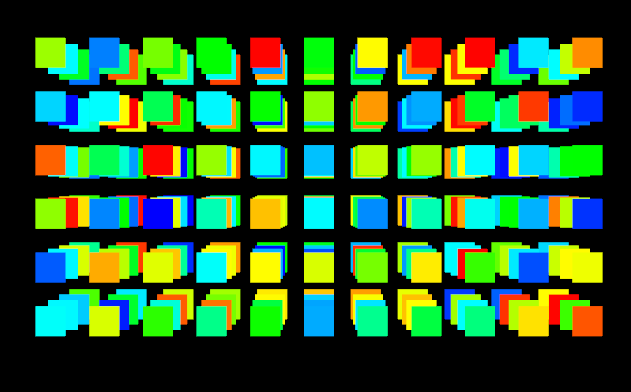
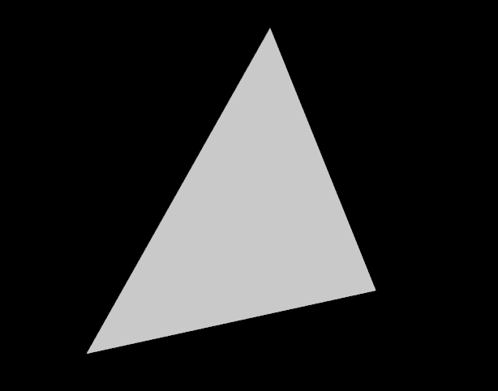
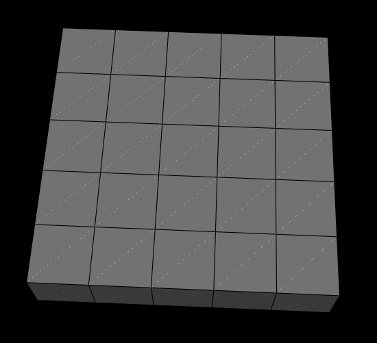
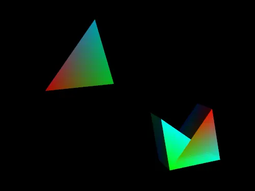
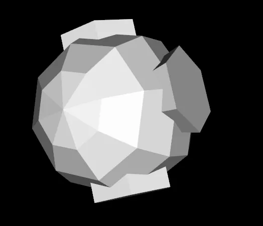

VTK is built to carry real-world 2D/3D data all the way from “numbers in memory” to “something you can see and reason about.” That means it needs data types that store values, but also store where those values live in space and how they connect. If you pick the right structure early, everything downstream, filters, rendering, memory usage, speed, gets smoother. Pick the wrong one, and you’ll spend time converting, losing information, or wondering why performance tanks.
VTK uses 3D geometries, including points, lines, polygons, and volumes. It handles images and volumetric data for 2D and 3D visualization. It works with scalar, vector, and tensor fields for complex data representation. Supports structured and unstructured grid types for various spatial data layouts. Includes support for time-series data and hierarchical datasets.
The mental model to keep in your pocket is simple: data in VTK is more than values. It’s values + geometry + topology + metadata. That combination is what lets VTK do “smart visualization” instead of just drawing triangles.
Topology, How things are connected
Topology describes the connectivity and structure of the mesh:
Topology answers questions like:
📌 Topology does not care about distances, angles, or shape.
Geometry, Where things are in space
Geometry describes the actual spatial position of points:
Geometry answers questions like:
📌 Geometry does not care about connectivity rules, only positions.
Topology is about “who is connected to whom.” Geometry is about “where they are.”
You can:
VTK grid types encode which of these freedoms you’re allowed to change.
Imagine a cube:
Same topology:
Different geometry:
All are topologically identical, but geometrically different.
Before you meet the “fancy” datasets, it helps to understand the trunk of the tree. vtkDataObject is VTK’s universal container: it’s the “everything starts here” base class. You care because once you know what every data object guarantees, you can navigate the VTK ecosystem without feeling like you’re memorizing random class names.
Do treat vtkDataObject as the shared contract. When you’re writing general pipelines or utilities, thinking at this level keeps your code flexible.
Don’t assume every vtkDataObject is directly renderable or has points/cells, some are composite containers, some are specialized.
I. Base class for all data objects in VTK
II. Stores data and metadata including
III. Common subclasses include
When people say “VTK dataset,” they’re often talking about nodes lower in this hierarchy, especially vtkDataSet and anything that has points + cells. The diagram below is useful because it tells you what you can safely expect. If you’re holding a vtkPointSet, for example, you know it has points. If you’re holding a vtkCompositeDataSet, you know you’re dealing with multiple datasets grouped together.
|
|--- vtkDataObject
|
|--- vtkDataSet
|
|--- vtkPointSet
| |
| |--- vtkPolyData
| |
| |--- vtkStructuredPoints (vtkImageData)
| |
| |--- vtkStructuredGrid
| |
| |--- vtkUnstructuredGrid
|
|--- vtkRectilinearGrid
|
|--- vtkCompositeDataSet
|
|--- vtkHierarchicalBoxDataSet
|
|--- vtkMultiBlockDataSet
|
|--- vtkHierarchicalDataSet
|
|--- vtkOverlappingAMR
|
|--- vtkNonOverlappingAMRvtkImageData is the “pixel/voxel brain” of VTK. It’s what you reach for when your data lives on a uniform grid, like images (2D) or volumes (3D). You care because this structure is fast and compact: connectivity is implicit, and a lot of VTK’s imaging and volume rendering pipeline is built around it.
Do use vtkImageData for CT/MRI, 3D textures, scalar fields sampled uniformly, and anything that feels like “voxels.”
Don’t force irregular spacing into it. The moment spacing isn’t uniform, you’ll either distort the meaning of your data or end up wishing you chose a rectilinear or unstructured grid.
Allowed cells
Notes
Think of vtkRectilinearGrid as “structured, but with stretchy spacing.” Topology is still a neat grid, but the points along each axis can be unevenly spaced. This matters when your data’s resolution changes by design, common in scientific models where you want more detail in certain regions without paying the cost everywhere else.
Do use this when you still want the simplicity of a structured grid, but your sampling is non-uniform. Don’t confuse this with curvilinear grids, rectilinear still means axes-aligned lines; spacing changes, not direction.

Allowed cells
Notes
vtkImageData📌 Important:
Rectilinear grids do not introduce new cell shapes, only variable spacing.
If vtkImageData is “voxels,” vtkPolyData is “surfaces.” This is the workhorse for meshes you’d actually model or export: triangle surfaces, polygon soups, lines, contours, and anything you’d describe as geometry you can touch. You care because most interactive 3D models and many visualization outputs end up as vtkPolyData.
Do use vtkPolyData for surfaces, contour results, boundaries, and models that are primarily skins/shells.
Don’t store volumetric cells here, vtkPolyData isn’t meant for full 3D cell types like tetrahedra or hexahedra.

Cells Allowed in vtkPolyData
0D Cells (Points)
1D Cells (Lines)
2D Cells (Surfaces)
vtkPolyData cannot contain:
📌 If a cell encloses volume, it does not belong in vtkPolyData.|
vtkPolyData is optimized for:
It assumes:
That’s why it’s much faster and lighter than volumetric grids, but also more limited.
A vtkStructuredGrid is where structure meets flexibility. The grid topology is still orderly (i,j,k indexing), but the points can warp through space, making it perfect for curvilinear coordinate systems and simulation meshes that bend around objects.
Do use this when you have a logical 3D grid layout but the geometry isn’t axis-aligned. Don’t use it when connectivity isn’t grid-like. If neighbors aren’t predictable via indices, you’re heading into unstructured territory.

Allowed cells
Notes
📌 Important distinction:
A voxel is a special case of a hexahedron. Structured grids use general hexes, not voxels.
So vtkStructuredGrid sounds so far very much like vtkRectilinearGrid but the crucial difference lies in how much geometric freedom each grid allows. While both data types share the same structured, i-j-k topology and implicit connectivity, a vtkRectilinearGrid restricts all grid lines to remain aligned with the Cartesian axes. Its geometry can only be stretched or compressed through non-uniform spacing along X, Y, and Z, making it memory-efficient and fast, but fundamentally limited to axis-aligned cells.
A vtkStructuredGrid, by contrast, removes this geometric constraint. Each point in the grid is stored explicitly and can occupy an arbitrary position in space, allowing the mesh to bend, skew, or follow curved boundaries while preserving its logical structure. This added flexibility comes at the cost of increased memory usage and slightly more expensive traversal, but it enables accurate representation of warped domains and boundary-fitted meshes that cannot be expressed using a rectilinear grid.
In practice, vtkRectilinearGrid should be preferred whenever axis-aligned geometry is sufficient, while vtkStructuredGrid becomes necessary when the grid must conform to complex or curved physical domains without abandoning structured topology.
vtkUnstructuredGrid is VTK’s “anything goes” dataset. It can mix cell types and represent very complex geometries. The tradeoff is that you have to explicitly store connectivity, which costs memory and computation, but you gain freedom.
This is the one you choose when the world stops being neat: adaptive meshes, FEM simulations, irregular domains, complex anatomy, fractured geology, you name it.
Do use it when the mesh is irregular, adaptive, or mixed-cell. Don’t default to it “just in case.” If your data is structured, structured grids will usually be faster and lighter.

Allowed cells (all VTK cell types)
1D
2D
3D
Higher-order (quadratic / curved)
Notes
This is one of the most important and practical decision points in VTK. If you remember only one thing, remember this:
Structured grids buy you speed and simplicity; unstructured grids buy you geometric freedom.
The “best” grid is almost always the simplest structure that can still represent your data faithfully. More flexibility comes with real costs, in memory, performance, and complexity.
As a rule of thumb:
High-level comparison:
| Structured Grids | Unstructured Grids | |
|---|---|---|
| Topology | Regular, fixed (i-j-k indexing) | Irregular, explicitly defined |
| Examples | vtkImageData, vtkRectilinearGrid, vtkStructuredGrid | vtkUnstructuredGrid |
| Advantages | Memory-efficient, fast traversal, simpler algorithms | Handles complex shapes and arbitrary topology |
| Disadvantages | Limited geometric flexibility | Higher memory use, slower traversal, more complex logic |
Structured grids come in multiple flavors, and you should prefer the most constrained one that still works.
Choose vtkRectilinearGrid if:
Choose vtkStructuredGrid if:
A useful mental model is that many workflows progressively relax constraints only when necessary:
RectilinearGrid → StructuredGrid → UnstructuredGridEach step increases geometric freedom, but also increases cost.
If you can describe point locations using only
X[i],Y[j], andZ[k], usevtkRectilinearGrid; otherwise, usevtkStructuredGrid.
Once your datasets get big, or naturally split into parts, you’ll want a container that preserves that structure. vtkMultiBlockDataSet lets you keep data organized the way you think about it: domains, components, LOD levels, timesteps, regions, etc. This matters because organization isn’t just neatness, it affects pipeline clarity, debugging, and how easily you can process or render subsets.
Do use multiblock when your data is naturally “many datasets,” especially for multi-domain simulations or grouped assets. Don’t flatten everything into one giant unstructured grid unless you truly need to, keeping blocks separate can make processing and rendering more manageable.

A vtkMultiBlockDataSet organizes datasets (or blocks) hierarchically. Each block can be a vtkDataSet subclass or another composite dataset, allowing versatile dataset organization. For instance, a vtkMultiBlockDataSet might contain blocks like vtkPolyData, vtkStructuredGrid, and even another vtkMultiBlockDataSet. This structure is invaluable in large-scale simulations where data is segmented into blocks representing different simulation areas or system components, enabling VTK to manage complex, multi-part datasets coherently.
This is where everything clicks: your data structure choice is not “just a container decision.” It’s a commitment that affects performance, tooling, and what operations feel natural. If you match the structure to the data’s true nature, VTK feels effortless. If you mismatch it, you’ll constantly translate, patch, and second-guess.
Do choose the least complex option that preserves meaning (geometry + topology + resolution). Don’t optimize prematurely by picking a complicated type “for future-proofing.” Future-proofing usually means choosing something accurate and convertible, not something maximal.
| VTK Data Object | Purpose and Use Cases | Complexity | Flexibility | Efficiency |
|---|---|---|---|---|
| PolyData | Ideal for representing 3D surfaces and complex shapes like sculptures or terrain models. | Moderate: Comprised of polygons and polylines, allowing for manipulation and detailing. | High: Excellent for complex, arbitrary shapes including intricate surface details. | High: Efficiently stores data specific to the shape, omitting unnecessary information. |
| Structured Grids | Suitable for 3D grid-based data like volumetric images or regular spatial data. | Low: Simple, regular structure with implicit connectivity, making it straightforward to handle. | Low: Confined to regular grid shapes, limiting its application to uniformly structured data. | High for regular data: Efficiently handles uniformly spaced data but less suitable for irregular datasets. |
| Unstructured Grids | Used for complex, irregular shapes like biological structures or geological formations. | High: Requires detailed definition of point connectivity, accommodating intricate geometries. | High: Extremely versatile, capable of representing any shape, be it regular or irregular. | Low to Moderate: Efficiency varies with the shape's complexity; generally less efficient than structured grids. |
| Structured Points (ImageData) | Perfect for regularly spaced data such as medical imaging (CT, MRI scans) or 3D textures. | Low: Simple and regular, with implicit connectivity for easy navigation. | Low: Restricted to regular grid shapes, ideal for uniformly spaced data. | Very High: Optimal for regular data thanks to implicit connectivity and uniform structure. |
| Rectilinear Grids | Appropriate for data with variable resolution, like atmospheric or oceanic datasets. | Moderate: Allows variable spacing while maintaining a regular grid structure. | Moderate: More adaptable than regular grids but less so than unstructured grids. | High: More efficient than unstructured grids for data that aligns with its variable but regular structure. |